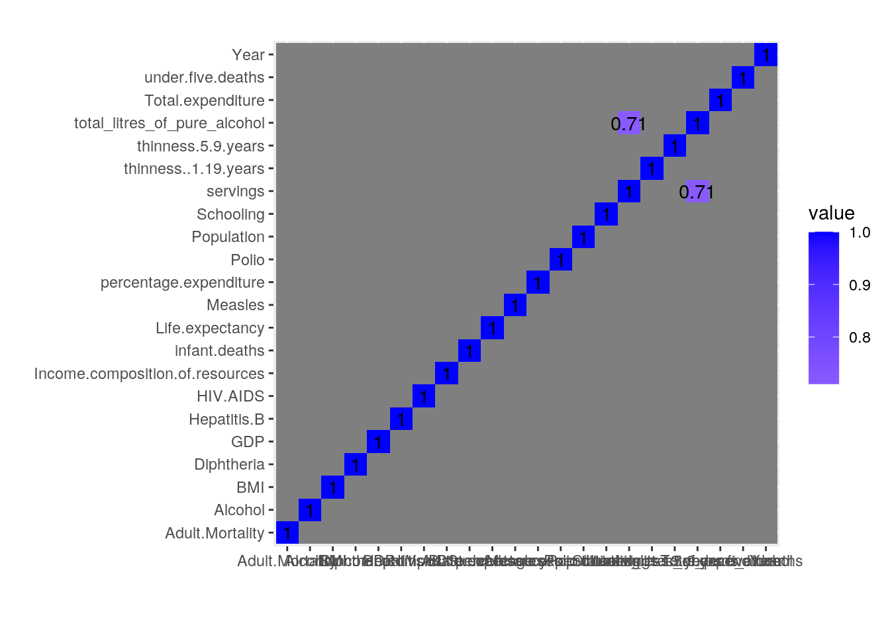
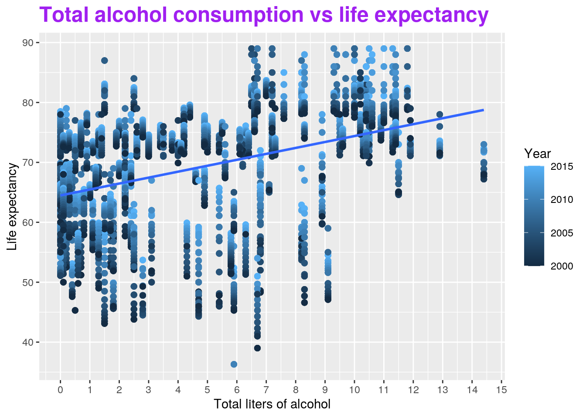
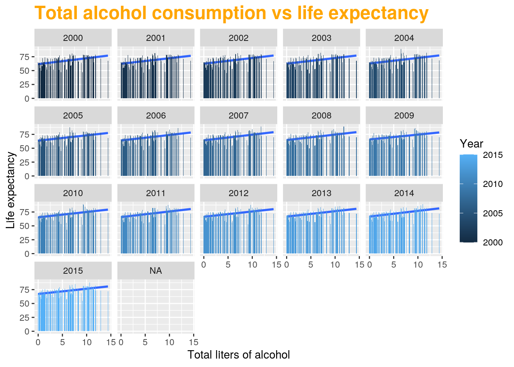
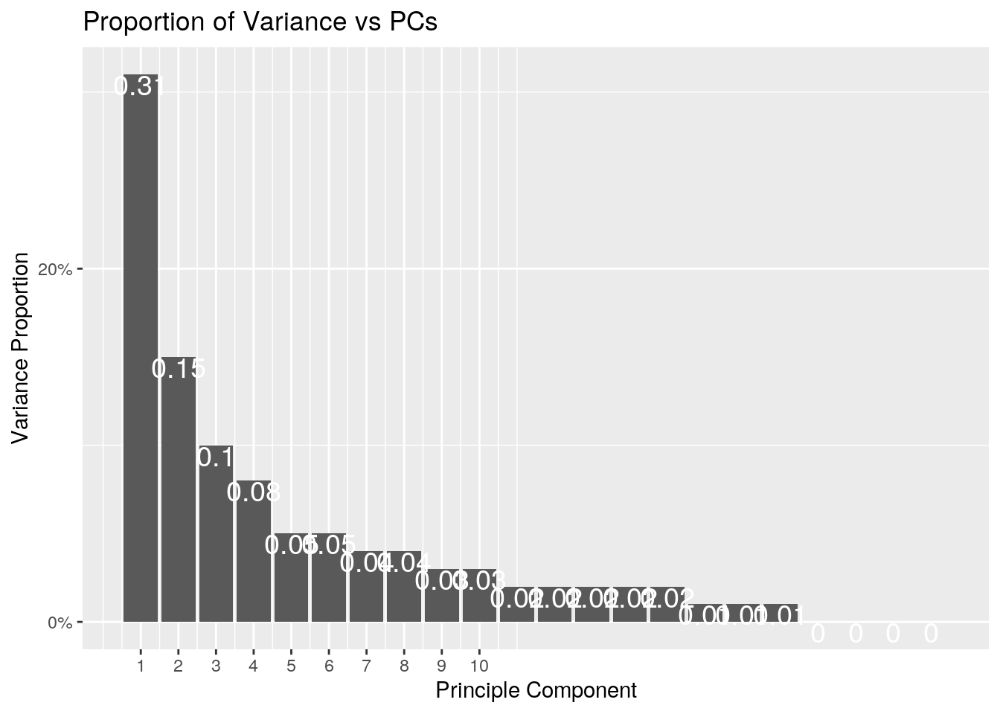
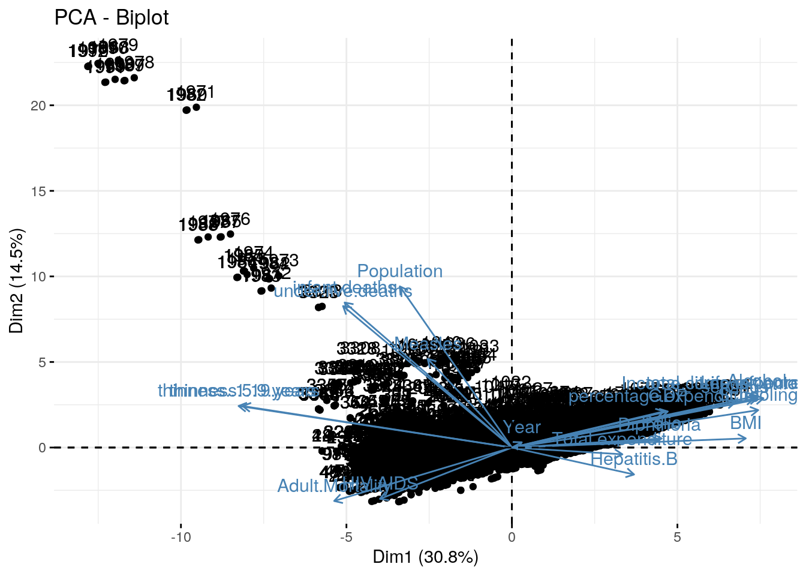

This is an R Markdown document. Markdown is a simple formatting syntax for authoring HTML, PDF, and MS Word documents. For more details on using R Markdown see http://rmarkdown.rstudio.com.
When you click the Knit button a document will be generated that includes both content as well as the output of any embedded R code chunks within the document. You can embed an R code chunk like this:
data(package = .packages(all.available = TRUE))## Warning in data(package = .packages(all.available = TRUE)): datasets have been
## moved from package 'base' to package 'datasets'## Warning in data(package = .packages(all.available = TRUE)): datasets have been
## moved from package 'stats' to package 'datasets'install.packages("fivethirtyeight", repos = "https://cran.r-project.org/web/packages/fivethirtyeight/vignettes/fivethirtyeight.html")## Installing package into '/stor/home/kaj2349/R/x86_64-pc-linux-gnu-library/3.6'
## (as 'lib' is unspecified)## Warning: unable to access index for repository https://cran.r-project.org/web/packages/fivethirtyeight/vignettes/fivethirtyeight.html/src/contrib:
## cannot open URL 'https://cran.r-project.org/web/packages/fivethirtyeight/vignettes/fivethirtyeight.html/src/contrib/PACKAGES'## Warning: package 'fivethirtyeight' is not available (for R version 3.6.1)library(fivethirtyeight)## Some larger datasets need to be installed separately, like senators and
## house_district_forecast. To install these, we recommend you install the
## fivethirtyeightdata package by running:
## install.packages('fivethirtyeightdata', repos =
## 'https://fivethirtyeightdata.github.io/drat/', type = 'source')data()
library(dplyr)##
## Attaching package: 'dplyr'## The following objects are masked from 'package:stats':
##
## filter, lag## The following objects are masked from 'package:base':
##
## intersect, setdiff, setequal, unionlibrary(tidyr)
library(stringr)
library(tibble)
library(ggplot2)
library(tidyverse)## ── Attaching packages ─────────────────────────────────────────── tidyverse 1.3.0 ──## ✓ readr 1.3.1 ✓ forcats 0.5.0
## ✓ purrr 0.3.4## ── Conflicts ────────────────────────────────────────────── tidyverse_conflicts() ──
## x dplyr::filter() masks stats::filter()
## x dplyr::lag() masks stats::lag()The two datasets that I have chosen are the drinks dataset and the life_expectancy dataset. These two datasets interest me, because as a college student who enjoys going out for a drink with friends, I've always wondered about the real long term effects of alcohol on the human body, especially if it significantly affects life expectancy. The drinks dataset describes which coountries consume the most alcohol. The drinks dataset contains the variables country, total_litres_of_pure_alcohol, and servings. The country variable represents the country, the servings variable is split into beer_servings, spirit_servings, and wine_servings, and describes the total number of servings of each type of alcohol consumed by the respective country. The total_litres_of_pure_alcohol describes the total amount of pure alcohol consumed by each respective country. The life_expectancy dataset contains the variables country, year, status, life expectancy, and many other variables. The country variable represents the country. The year variable represents the year, ranging from 2000-2015. The life expectancy represents the average life expectancy for the country in that particular year. The drinks dataset was acquired from fivethirtyeight and the life_expectancy dataset was acquired from kaggle (https://www.kaggle.com/kumarajarshi/life-expectancy-who). I expect drinks and life expectancy to have a negative correlation, since it is generally believed that alcohol consumption is damaging to the body and can cause various types of cancers and shorten life expectancy.
drinks_tidy <- drinks %>%
pivot_longer(cols = ends_with("servings"), names_to = "type", values_to = "servings") %>%
mutate(
type = str_sub(type, start=1, end=-10)
) %>%
arrange(country, type)
life_expectancy_tidy <- read.csv("https://drive.google.com/uc?export=download&id=1eAh-MFQd2kV3R6rUXyQPDgUzkDwbKDcd")drinks_life_joined <- drinks_tidy %>% left_join(life_expectancy_tidy, by = c("country"="Country"))I joined drinks and life expectancy by country because I want to compare the life expectancy of each country with the amount of alcohol consumed. I joined by the 'country' variable. The drinks dataset had 579 observations of 4 variables and the life_expectancy dataset had 2938 observations of 22 variables before joining. After joining, the drinks_life_joined dataset has 7689 observations of 25 variables.
### filter()
big_drinkers <- drinks_life_joined %>% filter(total_litres_of_pure_alcohol >= 5)
head(big_drinkers)## # A tibble: 6 x 25
## country total_litres_of… type servings Year Status Life.expectancy
## <chr> <dbl> <chr> <int> <int> <fct> <dbl>
## 1 Andorra 12.4 beer 245 NA <NA> NA
## 2 Andorra 12.4 spir… 138 NA <NA> NA
## 3 Andorra 12.4 wine 312 NA <NA> NA
## 4 Angola 5.9 beer 217 2015 Devel… 52.4
## 5 Angola 5.9 beer 217 2014 Devel… 51.7
## 6 Angola 5.9 beer 217 2013 Devel… 51.1
## # … with 18 more variables: Adult.Mortality <int>, infant.deaths <int>,
## # Alcohol <dbl>, percentage.expenditure <dbl>, Hepatitis.B <int>,
## # Measles <int>, BMI <dbl>, under.five.deaths <int>, Polio <int>,
## # Total.expenditure <dbl>, Diphtheria <int>, HIV.AIDS <dbl>, GDP <dbl>,
## # Population <dbl>, thinness..1.19.years <dbl>, thinness.5.9.years <dbl>,
## # Income.composition.of.resources <dbl>, Schooling <dbl>### arrange()
biggest_drinkers <- drinks_life_joined %>% arrange(desc(total_litres_of_pure_alcohol))
head(biggest_drinkers)## # A tibble: 6 x 25
## country total_litres_of… type servings Year Status Life.expectancy
## <chr> <dbl> <chr> <int> <int> <fct> <dbl>
## 1 Belarus 14.4 beer 142 2015 Devel… 72.3
## 2 Belarus 14.4 beer 142 2014 Devel… 72
## 3 Belarus 14.4 beer 142 2013 Devel… 71.7
## 4 Belarus 14.4 beer 142 2012 Devel… 71.9
## 5 Belarus 14.4 beer 142 2011 Devel… 72
## 6 Belarus 14.4 beer 142 2010 Devel… 73
## # … with 18 more variables: Adult.Mortality <int>, infant.deaths <int>,
## # Alcohol <dbl>, percentage.expenditure <dbl>, Hepatitis.B <int>,
## # Measles <int>, BMI <dbl>, under.five.deaths <int>, Polio <int>,
## # Total.expenditure <dbl>, Diphtheria <int>, HIV.AIDS <dbl>, GDP <dbl>,
## # Population <dbl>, thinness..1.19.years <dbl>, thinness.5.9.years <dbl>,
## # Income.composition.of.resources <dbl>, Schooling <dbl>### select()
country_drinks_lifeExpectancy <- drinks_life_joined %>% select(country, Year, total_litres_of_pure_alcohol, Life.expectancy)
head(country_drinks_lifeExpectancy)## # A tibble: 6 x 4
## country Year total_litres_of_pure_alcohol Life.expectancy
## <chr> <int> <dbl> <dbl>
## 1 Afghanistan 2015 0 65
## 2 Afghanistan 2014 0 59.9
## 3 Afghanistan 2013 0 59.9
## 4 Afghanistan 2012 0 59.5
## 5 Afghanistan 2011 0 59.2
## 6 Afghanistan 2010 0 58.8### mutate()
mutate_gallons <- drinks_life_joined %>% mutate(gallons = 0.264172 * total_litres_of_pure_alcohol)
head(mutate_gallons)## # A tibble: 6 x 26
## country total_litres_of… type servings Year Status Life.expectancy
## <chr> <dbl> <chr> <int> <int> <fct> <dbl>
## 1 Afghan… 0 beer 0 2015 Devel… 65
## 2 Afghan… 0 beer 0 2014 Devel… 59.9
## 3 Afghan… 0 beer 0 2013 Devel… 59.9
## 4 Afghan… 0 beer 0 2012 Devel… 59.5
## 5 Afghan… 0 beer 0 2011 Devel… 59.2
## 6 Afghan… 0 beer 0 2010 Devel… 58.8
## # … with 19 more variables: Adult.Mortality <int>, infant.deaths <int>,
## # Alcohol <dbl>, percentage.expenditure <dbl>, Hepatitis.B <int>,
## # Measles <int>, BMI <dbl>, under.five.deaths <int>, Polio <int>,
## # Total.expenditure <dbl>, Diphtheria <int>, HIV.AIDS <dbl>, GDP <dbl>,
## # Population <dbl>, thinness..1.19.years <dbl>, thinness.5.9.years <dbl>,
## # Income.composition.of.resources <dbl>, Schooling <dbl>, gallons <dbl>### summary statistic 1 - summarize()
summary <- drinks_life_joined %>% summarize(mean(Life.expectancy, na.rm=T), n(), n_distinct(country))
head(summary)## # A tibble: 1 x 3
## `mean(Life.expectancy, na.rm = T)` `n()` `n_distinct(country)`
## <dbl> <int> <int>
## 1 69.1 7689 193### summary statistic 2 - summarize()
summary <- drinks_life_joined %>% summarize(mean(total_litres_of_pure_alcohol, na.rm=T), n(), n_distinct(country))
head(summary)## # A tibble: 1 x 3
## `mean(total_litres_of_pure_alcohol, na.rm = T)` `n()` `n_distinct(country)`
## <dbl> <int> <int>
## 1 4.68 7689 193### summary statistic 3 - group_by(country) mean
groupby_country_mean <- drinks_life_joined %>% group_by(country) %>% summarize(mean_lifeExpectancy = mean(Life.expectancy, na.rm=T), mean_alc = mean(total_litres_of_pure_alcohol, na.rm=T))## `summarise()` ungrouping output (override with `.groups` argument)head(groupby_country_mean)## # A tibble: 6 x 3
## country mean_lifeExpectancy mean_alc
## <chr> <dbl> <dbl>
## 1 Afghanistan 58.2 0
## 2 Albania 75.2 4.9
## 3 Algeria 73.6 0.7
## 4 Andorra NaN 12.4
## 5 Angola 49.0 5.9
## 6 Antigua & Barbuda NaN 4.9### summary statistic 4 - group_by(country) , group_by(Year) mean
groupby_year <- drinks_life_joined %>% group_by(country) %>% group_by(Year) %>% summarize(mean_lifeExpectancy = mean(Life.expectancy, na.rm=T), mean_alc = mean(total_litres_of_pure_alcohol, na.rm=T))## `summarise()` ungrouping output (override with `.groups` argument)head(groupby_year)## # A tibble: 6 x 3
## Year mean_lifeExpectancy mean_alc
## <int> <dbl> <dbl>
## 1 2000 66.6 4.68
## 2 2001 67.0 4.68
## 3 2002 67.2 4.68
## 4 2003 67.2 4.68
## 5 2004 67.5 4.68
## 6 2005 68.1 4.68### summary statistic 5 - group_by() sd
groupby_life_sd <- drinks_life_joined %>% group_by(country) %>% summarize(sd_lifeExpectancy = sd(Life.expectancy, na.rm=T))## `summarise()` ungrouping output (override with `.groups` argument)head(groupby_life_sd)## # A tibble: 6 x 2
## country sd_lifeExpectancy
## <chr> <dbl>
## 1 Afghanistan 2.33
## 2 Albania 1.80
## 3 Algeria 1.52
## 4 Andorra NA
## 5 Angola 2.78
## 6 Antigua & Barbuda NA### summary statistic 6 - group_by() sd drinks
groupby_drinks_sd <- drinks_life_joined %>% group_by(type) %>% summarize(sd_drinks = sd(servings, na.rm=T))## `summarise()` ungrouping output (override with `.groups` argument)head(groupby_drinks_sd)## # A tibble: 3 x 2
## type sd_drinks
## <chr> <dbl>
## 1 beer 101.
## 2 spirit 86.3
## 3 wine 81.8### summary statistic 7 - group_by() min life expectancy
groupby_country_min <- drinks_life_joined %>% group_by(country) %>% summarize(min_lifeExpectancy = min(Life.expectancy, na.rm=T))## Warning in min(Life.expectancy, na.rm = T): no non-missing arguments to min;
## returning Inf
## Warning in min(Life.expectancy, na.rm = T): no non-missing arguments to min;
## returning Inf
## Warning in min(Life.expectancy, na.rm = T): no non-missing arguments to min;
## returning Inf
## Warning in min(Life.expectancy, na.rm = T): no non-missing arguments to min;
## returning Inf
## Warning in min(Life.expectancy, na.rm = T): no non-missing arguments to min;
## returning Inf
## Warning in min(Life.expectancy, na.rm = T): no non-missing arguments to min;
## returning Inf
## Warning in min(Life.expectancy, na.rm = T): no non-missing arguments to min;
## returning Inf
## Warning in min(Life.expectancy, na.rm = T): no non-missing arguments to min;
## returning Inf
## Warning in min(Life.expectancy, na.rm = T): no non-missing arguments to min;
## returning Inf
## Warning in min(Life.expectancy, na.rm = T): no non-missing arguments to min;
## returning Inf
## Warning in min(Life.expectancy, na.rm = T): no non-missing arguments to min;
## returning Inf
## Warning in min(Life.expectancy, na.rm = T): no non-missing arguments to min;
## returning Inf
## Warning in min(Life.expectancy, na.rm = T): no non-missing arguments to min;
## returning Inf
## Warning in min(Life.expectancy, na.rm = T): no non-missing arguments to min;
## returning Inf
## Warning in min(Life.expectancy, na.rm = T): no non-missing arguments to min;
## returning Inf
## Warning in min(Life.expectancy, na.rm = T): no non-missing arguments to min;
## returning Inf
## Warning in min(Life.expectancy, na.rm = T): no non-missing arguments to min;
## returning Inf
## Warning in min(Life.expectancy, na.rm = T): no non-missing arguments to min;
## returning Inf
## Warning in min(Life.expectancy, na.rm = T): no non-missing arguments to min;
## returning Inf
## Warning in min(Life.expectancy, na.rm = T): no non-missing arguments to min;
## returning Inf
## Warning in min(Life.expectancy, na.rm = T): no non-missing arguments to min;
## returning Inf
## Warning in min(Life.expectancy, na.rm = T): no non-missing arguments to min;
## returning Inf
## Warning in min(Life.expectancy, na.rm = T): no non-missing arguments to min;
## returning Inf
## Warning in min(Life.expectancy, na.rm = T): no non-missing arguments to min;
## returning Inf
## Warning in min(Life.expectancy, na.rm = T): no non-missing arguments to min;
## returning Inf
## Warning in min(Life.expectancy, na.rm = T): no non-missing arguments to min;
## returning Inf
## Warning in min(Life.expectancy, na.rm = T): no non-missing arguments to min;
## returning Inf
## Warning in min(Life.expectancy, na.rm = T): no non-missing arguments to min;
## returning Inf
## Warning in min(Life.expectancy, na.rm = T): no non-missing arguments to min;
## returning Inf
## Warning in min(Life.expectancy, na.rm = T): no non-missing arguments to min;
## returning Inf
## Warning in min(Life.expectancy, na.rm = T): no non-missing arguments to min;
## returning Inf
## Warning in min(Life.expectancy, na.rm = T): no non-missing arguments to min;
## returning Inf
## Warning in min(Life.expectancy, na.rm = T): no non-missing arguments to min;
## returning Inf
## Warning in min(Life.expectancy, na.rm = T): no non-missing arguments to min;
## returning Inf
## Warning in min(Life.expectancy, na.rm = T): no non-missing arguments to min;
## returning Inf## `summarise()` ungrouping output (override with `.groups` argument)head(groupby_country_min)## # A tibble: 6 x 2
## country min_lifeExpectancy
## <chr> <dbl>
## 1 Afghanistan 54.8
## 2 Albania 72.6
## 3 Algeria 71.3
## 4 Andorra Inf
## 5 Angola 45.3
## 6 Antigua & Barbuda Inf### summary statistic 8 - group_by() max life expectancy
groupby_country_max <- drinks_life_joined %>% group_by(country) %>% summarize(max_lifeExpectancy = max(Life.expectancy, na.rm=T))## Warning in max(Life.expectancy, na.rm = T): no non-missing arguments to max;
## returning -Inf## Warning in max(Life.expectancy, na.rm = T): no non-missing arguments to max;
## returning -Inf
## Warning in max(Life.expectancy, na.rm = T): no non-missing arguments to max;
## returning -Inf
## Warning in max(Life.expectancy, na.rm = T): no non-missing arguments to max;
## returning -Inf
## Warning in max(Life.expectancy, na.rm = T): no non-missing arguments to max;
## returning -Inf
## Warning in max(Life.expectancy, na.rm = T): no non-missing arguments to max;
## returning -Inf
## Warning in max(Life.expectancy, na.rm = T): no non-missing arguments to max;
## returning -Inf
## Warning in max(Life.expectancy, na.rm = T): no non-missing arguments to max;
## returning -Inf
## Warning in max(Life.expectancy, na.rm = T): no non-missing arguments to max;
## returning -Inf
## Warning in max(Life.expectancy, na.rm = T): no non-missing arguments to max;
## returning -Inf
## Warning in max(Life.expectancy, na.rm = T): no non-missing arguments to max;
## returning -Inf
## Warning in max(Life.expectancy, na.rm = T): no non-missing arguments to max;
## returning -Inf
## Warning in max(Life.expectancy, na.rm = T): no non-missing arguments to max;
## returning -Inf
## Warning in max(Life.expectancy, na.rm = T): no non-missing arguments to max;
## returning -Inf
## Warning in max(Life.expectancy, na.rm = T): no non-missing arguments to max;
## returning -Inf
## Warning in max(Life.expectancy, na.rm = T): no non-missing arguments to max;
## returning -Inf
## Warning in max(Life.expectancy, na.rm = T): no non-missing arguments to max;
## returning -Inf
## Warning in max(Life.expectancy, na.rm = T): no non-missing arguments to max;
## returning -Inf
## Warning in max(Life.expectancy, na.rm = T): no non-missing arguments to max;
## returning -Inf
## Warning in max(Life.expectancy, na.rm = T): no non-missing arguments to max;
## returning -Inf
## Warning in max(Life.expectancy, na.rm = T): no non-missing arguments to max;
## returning -Inf
## Warning in max(Life.expectancy, na.rm = T): no non-missing arguments to max;
## returning -Inf
## Warning in max(Life.expectancy, na.rm = T): no non-missing arguments to max;
## returning -Inf
## Warning in max(Life.expectancy, na.rm = T): no non-missing arguments to max;
## returning -Inf
## Warning in max(Life.expectancy, na.rm = T): no non-missing arguments to max;
## returning -Inf
## Warning in max(Life.expectancy, na.rm = T): no non-missing arguments to max;
## returning -Inf
## Warning in max(Life.expectancy, na.rm = T): no non-missing arguments to max;
## returning -Inf
## Warning in max(Life.expectancy, na.rm = T): no non-missing arguments to max;
## returning -Inf
## Warning in max(Life.expectancy, na.rm = T): no non-missing arguments to max;
## returning -Inf
## Warning in max(Life.expectancy, na.rm = T): no non-missing arguments to max;
## returning -Inf
## Warning in max(Life.expectancy, na.rm = T): no non-missing arguments to max;
## returning -Inf
## Warning in max(Life.expectancy, na.rm = T): no non-missing arguments to max;
## returning -Inf
## Warning in max(Life.expectancy, na.rm = T): no non-missing arguments to max;
## returning -Inf
## Warning in max(Life.expectancy, na.rm = T): no non-missing arguments to max;
## returning -Inf
## Warning in max(Life.expectancy, na.rm = T): no non-missing arguments to max;
## returning -Inf## `summarise()` ungrouping output (override with `.groups` argument)head(groupby_country_max)## # A tibble: 6 x 2
## country max_lifeExpectancy
## <chr> <dbl>
## 1 Afghanistan 65
## 2 Albania 77.8
## 3 Algeria 75.6
## 4 Andorra -Inf
## 5 Angola 56
## 6 Antigua & Barbuda -Inf### summary statistic 9 - group_by() median life expectancy
groupby_country_med <- drinks_life_joined %>% group_by(country) %>% summarize(med_lifeExpectancy = median(Life.expectancy, na.rm=T))## `summarise()` ungrouping output (override with `.groups` argument)head(groupby_country_med)## # A tibble: 6 x 2
## country med_lifeExpectancy
## <chr> <dbl>
## 1 Afghanistan 57.8
## 2 Albania 75.6
## 3 Algeria 73.9
## 4 Andorra NA
## 5 Angola 48.4
## 6 Antigua & Barbuda NA### summary statistic 10 - group_by() median drinks
groupby_drinks_med <- drinks_life_joined %>% group_by(country) %>% summarize(med_total_litres_of_pure_alcohol = median(total_litres_of_pure_alcohol, na.rm=T))## `summarise()` ungrouping output (override with `.groups` argument)head(groupby_drinks_med)## # A tibble: 6 x 2
## country med_total_litres_of_pure_alcohol
## <chr> <dbl>
## 1 Afghanistan 0
## 2 Albania 4.9
## 3 Algeria 0.7
## 4 Andorra 12.4
## 5 Angola 5.9
## 6 Antigua & Barbuda 4.9For the filter() dplyr function, I filtered by countries with a total alcohol consumption of greater than 5 litres. For the arrange() dplyr function I arranged the total alcohol by countries in decreasing order. For the select() dplyr function, I selected by country, year, total liters of alcohol, and life expectancy. For the mutate() dplyr function, I added a new column that converted liters of alcohol for each country into gallons, so that it is easier to visualize for me. For 2 of the summarize() dpylr functions I summarized by mean life expectancy for one and mean total alcohol consumption for the second. I grouped by country while summarizing by mean life expectancy and mean alcohol consumption. I also grouped by country and year while summarizing by mean life expectancy and mean alcohol consumption. I grouped by country while summarizing by standard deviation of life expectancy. I grouped by type of alcoholic drink type while summarizing by standard deviation of servings of alcoholic drinks. I grouped by country and summarized by max and min life expectancies. I grouped by country while summarizing by median life expectancy and median total amount of alcohol consumed.
drinks_le = subset(drinks_life_joined, select=-c(country, type, Status))
glimpse(drinks_le)## Rows: 7,689
## Columns: 22
## $ total_litres_of_pure_alcohol <dbl> 0, 0, 0, 0, 0, 0, 0, 0, 0, 0, 0, 0, 0…
## $ servings <int> 0, 0, 0, 0, 0, 0, 0, 0, 0, 0, 0, 0, 0…
## $ Year <int> 2015, 2014, 2013, 2012, 2011, 2010, 2…
## $ Life.expectancy <dbl> 65.0, 59.9, 59.9, 59.5, 59.2, 58.8, 5…
## $ Adult.Mortality <int> 263, 271, 268, 272, 275, 279, 281, 28…
## $ infant.deaths <int> 62, 64, 66, 69, 71, 74, 77, 80, 82, 8…
## $ Alcohol <dbl> 0.01, 0.01, 0.01, 0.01, 0.01, 0.01, 0…
## $ percentage.expenditure <dbl> 71.279624, 73.523582, 73.219243, 78.1…
## $ Hepatitis.B <int> 65, 62, 64, 67, 68, 66, 63, 64, 63, 6…
## $ Measles <int> 1154, 492, 430, 2787, 3013, 1989, 286…
## $ BMI <dbl> 19.1, 18.6, 18.1, 17.6, 17.2, 16.7, 1…
## $ under.five.deaths <int> 83, 86, 89, 93, 97, 102, 106, 110, 11…
## $ Polio <int> 6, 58, 62, 67, 68, 66, 63, 64, 63, 58…
## $ Total.expenditure <dbl> 8.16, 8.18, 8.13, 8.52, 7.87, 9.20, 9…
## $ Diphtheria <int> 65, 62, 64, 67, 68, 66, 63, 64, 63, 5…
## $ HIV.AIDS <dbl> 0.1, 0.1, 0.1, 0.1, 0.1, 0.1, 0.1, 0.…
## $ GDP <dbl> 584.25921, 612.69651, 631.74498, 669.…
## $ Population <dbl> 33736494, 327582, 31731688, 3696958, …
## $ thinness..1.19.years <dbl> 17.2, 17.5, 17.7, 17.9, 18.2, 18.4, 1…
## $ thinness.5.9.years <dbl> 17.3, 17.5, 17.7, 18.0, 18.2, 18.4, 1…
## $ Income.composition.of.resources <dbl> 0.479, 0.476, 0.470, 0.463, 0.454, 0.…
## $ Schooling <dbl> 10.1, 10.0, 9.9, 9.8, 9.5, 9.2, 8.9, …drinks_le%>%select_if(is.numeric)%>%
cor%>%as.data.frame%>%
rownames_to_column%>%pivot_longer(-1)%>%
ggplot(aes(rowname,name,fill=value))+geom_tile()+
geom_text(aes(label=round(value,2)))+
xlab("")+ylab("")+coord_fixed()+
scale_fill_gradient2(low="red",mid="white",high="blue")## Warning: Removed 460 rows containing missing values (geom_text).
There is a strong positive correlation between servings and total_litres_of_pure_alcohol. There does not seem to be correlations between other variables according to the correlation heatmap.
ggplot(data = drinks_life_joined, aes(x = total_litres_of_pure_alcohol, y = Life.expectancy, fill = Year)) + geom_point(size=2, aes(color = Year)) + geom_smooth(method = lm, se = FALSE) + ggtitle("Total alcohol consumption vs life expectancy") + labs(x = "Total liters of alcohol", y = "Life expectancy") + scale_x_continuous(breaks=seq(0,15,1)) + theme(plot.title = element_text(size = 18, face = "bold", color = "purple"))## `geom_smooth()` using formula 'y ~ x'## Warning: Removed 105 rows containing non-finite values (stat_smooth).## Warning: Removed 105 rows containing missing values (geom_point).
There appears to be a weak positive correlation between alcohol consumption and life expectancy. From the graph, it appears that people living in countries with higher alcohol consumption tend to have longer life expectancies. This contradicts my prediction that total alcohol consumption and life expectancy would have a negative correlation. There appear to be several outliers in the graph.
ggplot(data = drinks_life_joined, aes(x = total_litres_of_pure_alcohol, y = Life.expectancy, fill = Year)) + geom_smooth(method = lm, se = FALSE) + ggtitle("Total alcohol consumption vs life expectancy") + labs(x = "Total liters of alcohol", y = "Life expectancy") + theme(plot.title = element_text(size = 18, face = "bold", color = "orange")) + facet_wrap(drinks_life_joined$Year) + geom_bar(stat='summary', fun.y = mean)## Warning: Ignoring unknown parameters: fun.y## `geom_smooth()` using formula 'y ~ x'## Warning: Removed 105 rows containing non-finite values (stat_smooth).## Warning: Removed 105 rows containing non-finite values (stat_summary).## No summary function supplied, defaulting to `mean_se()`## No summary function supplied, defaulting to `mean_se()`
## No summary function supplied, defaulting to `mean_se()`
## No summary function supplied, defaulting to `mean_se()`
## No summary function supplied, defaulting to `mean_se()`
## No summary function supplied, defaulting to `mean_se()`
## No summary function supplied, defaulting to `mean_se()`
## No summary function supplied, defaulting to `mean_se()`
## No summary function supplied, defaulting to `mean_se()`
## No summary function supplied, defaulting to `mean_se()`
## No summary function supplied, defaulting to `mean_se()`
## No summary function supplied, defaulting to `mean_se()`
## No summary function supplied, defaulting to `mean_se()`
## No summary function supplied, defaulting to `mean_se()`
## No summary function supplied, defaulting to `mean_se()`
## No summary function supplied, defaulting to `mean_se()`
There appears to be a weak positive correlation between alcohol consumption and life expectancy for every year from 2000 to 2015. From the graphs, it appears that countries with higher amounts of alcohol consumption tend to have higher life expectancies. This contradicts my prediction that total alcohol consumption and life expectancy would have a negative correlation.
drinks_life_joined1 <- drinks_life_joined %>% select(-country, -type, -Status)
drinks_life_joined1 <- drinks_life_joined %>% select_if(is.numeric) %>% scale
rownames(drinks_life_joined1) <- drinks_life_joined$Name## Warning: Unknown or uninitialised column: `Name`.drinks_life_pca <- princomp(na.omit(drinks_life_joined1))
names(drinks_life_pca)## [1] "sdev" "loadings" "center" "scale" "n.obs" "scores" "call"Take the drinks_life_joined dataset and clean the data by grabbing all numerics except country, type and status. Normalize the data and run princomp() on the scaled data and decide how many principal components to keep. Visualise and interpret the data.
eigval<-drinks_life_pca$sdev^2 #square to convert SDs to eigenvalues
varprop=round(eigval/sum(eigval), 2) #proportion of var explained by each PC
ggplot() + geom_bar(aes(y=varprop, x=1:22), stat="identity") +
geom_text(aes(x=1:22, y=varprop, label=round(varprop, 2)), vjust=1, col="white", size=5) +
scale_y_continuous(breaks=seq(0, .6, .2), labels = scales::percent) +
scale_x_continuous(breaks=1:10) +
labs(title = "Proportion of Variance vs PCs", x = "Principle Component", y = "Variance Proportion")
Square to convert SDs to eigenvalues. To decide how many PCs to keep, plot the proportion of variance explained by each PC from largest eigen value to smallest ("a scree plot"). To determine how many PCs to keep: pick PCs until the scree plot flattens, picks PCs until cumulative proportion of variance is greater than 80%, and pick PCs whose eigenvalues are greater than 1(Kaiser's rule).
preparedData <- drinks_life_joined%>%ungroup()%>%select(-country, -type, -Status)
nums <- preparedData%>% select_if(is.numeric) %>% scale
drinks_life_pca <- princomp(na.omit(nums))
summary(drinks_life_pca, loadings=T)## Importance of components:
## Comp.1 Comp.2 Comp.3 Comp.4 Comp.5
## Standard deviation 2.5135888 1.7276125 1.40548777 1.29499635 1.04748263
## Proportion of Variance 0.3075353 0.1452778 0.09615251 0.08162883 0.05340724
## Cumulative Proportion 0.3075353 0.4528130 0.54896556 0.63059439 0.68400164
## Comp.6 Comp.7 Comp.8 Comp.9 Comp.10
## Standard deviation 0.97259367 0.88423558 0.87059405 0.83941660 0.76935110
## Proportion of Variance 0.04604361 0.03805769 0.03689248 0.03429743 0.02881082
## Cumulative Proportion 0.73004525 0.76810294 0.80499542 0.83929285 0.86810368
## Comp.11 Comp.12 Comp.13 Comp.14 Comp.15
## Standard deviation 0.6977072 0.65414734 0.63355664 0.60937229 0.56380942
## Proportion of Variance 0.0236948 0.02082848 0.01953788 0.01807473 0.01547288
## Cumulative Proportion 0.8917985 0.91262696 0.93216483 0.95023957 0.96571245
## Comp.16 Comp.17 Comp.18 Comp.19
## Standard deviation 0.52490582 0.386659644 0.329070289 0.272072614
## Proportion of Variance 0.01341125 0.007277198 0.005270889 0.003603099
## Cumulative Proportion 0.97912370 0.986400895 0.991671783 0.995274882
## Comp.20 Comp.21 Comp.22
## Standard deviation 0.263007919 0.160492686 0.0462996259
## Proportion of Variance 0.003367008 0.001253767 0.0001043426
## Cumulative Proportion 0.998641890 0.999895657 1.0000000000
##
## Loadings:
## Comp.1 Comp.2 Comp.3 Comp.4 Comp.5 Comp.6
## total_litres_of_pure_alcohol 0.275 0.155 0.357 0.199
## servings 0.250 0.142 0.242 0.300
## Year -0.133 -0.303 -0.360
## Life.expectancy 0.282 0.155 -0.260
## Adult.Mortality -0.199 -0.168 0.393 0.151
## infant.deaths -0.187 0.457
## Alcohol 0.274 0.162 0.349 0.252
## percentage.expenditure 0.170 0.114 0.114 -0.496 -0.109
## Hepatitis.B 0.137 -0.193 0.563
## Measles 0.279 0.233
## BMI 0.262 -0.143 0.230 -0.241
## under.five.deaths -0.189 0.446
## Polio 0.168 -0.116 0.479
## Total.expenditure 0.124 0.124 -0.125 -0.564
## Diphtheria 0.165 -0.129 0.480
## HIV.AIDS -0.148 -0.162 0.582 0.209 -0.269
## GDP 0.174 0.114 0.103 -0.463 -0.103
## Population -0.126 0.508 0.174 -0.285
## thinness..1.19.years -0.306 0.131 0.231 -0.352 0.209
## thinness.5.9.years -0.301 0.131 0.232 -0.349 0.229
## Income.composition.of.resources 0.271 0.154
## Schooling 0.276 0.118
## Comp.7 Comp.8 Comp.9 Comp.10 Comp.11 Comp.12
## total_litres_of_pure_alcohol 0.200 0.111
## servings 0.251 0.108
## Year 0.336 0.651 0.311 -0.120 -0.193
## Life.expectancy -0.138
## Adult.Mortality 0.256 0.239 0.451
## infant.deaths 0.116 0.119
## Alcohol 0.136
## percentage.expenditure -0.412 0.166 0.115
## Hepatitis.B 0.117 0.109 0.164 0.579 -0.319
## Measles -0.295 0.645 -0.257
## BMI -0.319 -0.344 0.489 0.468
## under.five.deaths 0.124 0.128
## Polio -0.189 -0.103 -0.469 0.488
## Total.expenditure 0.426 -0.630 0.179
## Diphtheria -0.141 -0.106
## HIV.AIDS -0.233 -0.177 -0.439 -0.317
## GDP -0.379 0.135
## Population 0.128 -0.456 0.374 -0.179 -0.225
## thinness..1.19.years 0.178 -0.116 -0.140 -0.220 0.112
## thinness.5.9.years 0.188 -0.100 -0.142 -0.226 0.107
## Income.composition.of.resources 0.110 -0.332 -0.126 -0.141
## Schooling -0.110 -0.274
## Comp.13 Comp.14 Comp.15 Comp.16 Comp.17 Comp.18
## total_litres_of_pure_alcohol 0.222 0.242 0.117 0.262
## servings -0.608 -0.477 -0.279
## Year -0.130 0.165 0.114 -0.115
## Life.expectancy 0.161 -0.167 -0.119 0.216 -0.721
## Adult.Mortality -0.120 0.486 -0.305 -0.177 -0.167
## infant.deaths 0.283 -0.214 -0.248
## Alcohol 0.304 0.130 0.303 0.128 -0.383
## percentage.expenditure
## Hepatitis.B -0.325
## Measles -0.401 0.246 0.232
## BMI -0.142 0.189 0.220
## under.five.deaths 0.315 -0.222 -0.242
## Polio -0.195 0.265 -0.314
## Total.expenditure
## Diphtheria -0.375 0.732
## HIV.AIDS -0.237 -0.191
## GDP
## Population -0.267 0.181 0.241
## thinness..1.19.years -0.119 0.119
## thinness.5.9.years -0.110 0.113
## Income.composition.of.resources 0.284 -0.326 -0.230 -0.681 0.165
## Schooling 0.266 -0.105 -0.213 0.677 0.386
## Comp.19 Comp.20 Comp.21 Comp.22
## total_litres_of_pure_alcohol 0.119 0.676
## servings
## Year
## Life.expectancy 0.100 0.360
## Adult.Mortality
## infant.deaths 0.711
## Alcohol -0.549
## percentage.expenditure -0.679
## Hepatitis.B
## Measles
## BMI
## under.five.deaths -0.702
## Polio
## Total.expenditure
## Diphtheria
## HIV.AIDS 0.102
## GDP 0.733
## Population
## thinness..1.19.years -0.684 0.163
## thinness.5.9.years 0.696 -0.121
## Income.composition.of.resources
## Schooling -0.108 -0.220library(factoextra)## Welcome! Want to learn more? See two factoextra-related books at https://goo.gl/ve3WBafviz_pca_biplot(drinks_life_pca)
A biplot combines a loadings plot with a PC score plot. The variables that extend into the first quadrant are positively correlated for PC1 and positively correlated for PC2. The variables that extend into the second quadrant are negatively correlated for PC1 and positively correlated for PC2. The variables that extend into the third quadrant are negatively correlated for PC1 and negatively correlated for PC2. The variables that extend into the fourth quadrant are positively correlated for PC1 and negatively correlated for PC2.
Note that the echo = FALSE parameter was added to the code chunk to prevent printing of the R code that generated the plot.